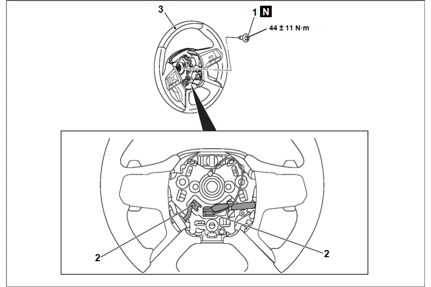
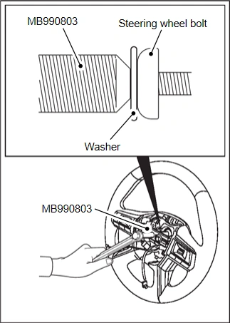

轉向 - 轉向系統 - 拆卸與安裝 - 方向盤
拆卸與安裝
N5070103X0003A00ENG
警告：
務必參閱安全氣囊 (AIRBAG) 相關之預防措施/注意事項及備註 (請參閱 Restraints - 安全氣囊 Airbag - Precaution - 預防措施/注意事項 –
安全氣囊系統 (氣囊) "AIR BAG" 及 "SEAT BELT 預緊器" 注意事項
).
警告：
作業前，務必確認駕駛座安全氣囊模組相關預防措施/注意事項。(請參閱 Restraints - 安全氣囊 Airbag - 拆卸與安裝 - Driver 安全氣囊模組 -
拆卸與安裝
.)
作業前，務必確認Spiral Cable相關預防措施/注意事項。(請參閱 Restraints - 安全氣囊 Airbag - 拆卸與安裝 - Spiral Cable -
拆卸與安裝
.)
安裝後，執行轉向扭力感測器校正。(請參閱 Brakes - BRAKE Control System - With ABS 作動器 and Electric Unit (Control Unit) - Basic Inspection - 調整 of Steering Angle 感知器 Neutral 位置 -
作業程序
.)
拆卸前作業
方向盤正前方位置檢查
駕駛座安全氣囊模組拆卸 (請參閱
拆卸與安裝
)
安裝後作業
駕駛座安全氣囊模組安裝 (請參閱
拆卸與安裝
)
方向盤正前方位置檢查
方向盤晃動檢查

拆卸步驟
1.
方向盤螺栓
2.
Spiral cable線束接頭
<<A>>
3.
方向盤總成
拆卸要點
<<A>> 方向盤螺栓/附方向盤開關之方向盤總成拆卸
將方向盤置於正前方位置。
鬆開方向盤螺栓。此時請勿拆下螺栓。
警告：
使用專用工具拆卸方向盤，以免轉向柱碰撞吸收機構受損。
將專用工具方向盤拉拔器 (MB990803) 以2支固定螺栓鎖緊於附方向盤開關之方向盤總成。

在方向盤螺栓與專用工具方向盤拉拔器 (MB990803) 螺栓之間插入墊圈。
鎖緊專用工具方向盤拉拔器 (MB990803) 中央螺栓，然後拉出附方向盤開關之方向盤總成。
拆下方向盤螺栓。
拆下附方向盤開關之方向盤總成。
已加入書籤
書籤數量過多。
請刪除後重新加入書籤。
×
){kind=link}
){kind=link}